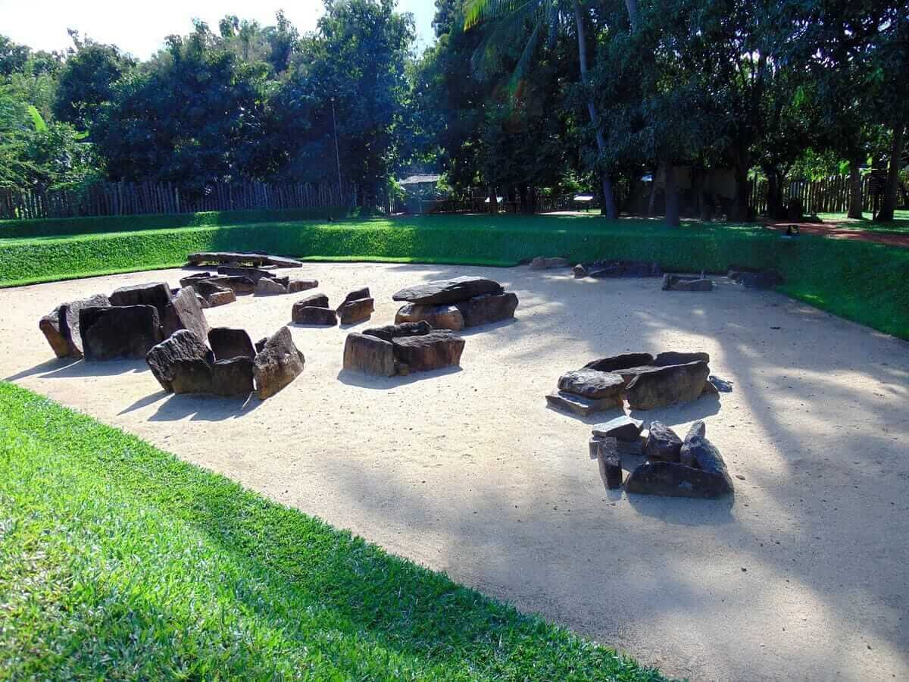

The ancient burial grounds of Sri Lanka's Early Iron Age, a site of incredible archaeological and historic significance.
The Ibbankatuwa Megalithic Burial Site is one of the most significant archaeological locations in Sri Lanka. Dating back over 2,500 years to the Early Iron Age, this ancient burial ground consists of several stone-chambered tombs spread across a large area near the Dambulla rocks.
Each tomb, meticulously constructed from massive stone slabs, has revealed a wealth of into the lives and funerary practices of prehistoric people. Discoveries of pottery, iron tools, and even colorful beads suggest a sophisticated society that was part of a broader network of trade and culture. Walking through this quiet, historic grove is a journey back to the dawn of civilization on the island.
Back to Dambulla Hub